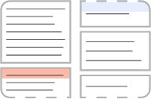

One way to visualize
a personal diary.
Intro
On August 10, 2021, I reached the last page of my diary, which I started writing on the first day of 2020.
I thought it would be interesting to try to represent the structure of its pages using simple design choices.
I thought it would be interesting to try to represent the structure of its pages using simple design choices.
The rules are:
- each block inside a page represents a single writing session, on a certain date
- the height of each block is proportional to the actual space that it occupies on the original page
- if a writing session spans over multiple pages, the upper and/or lower side of its related block will be a dashed line, to express continuation
- if I skipped writing for one or more days, at the top of the block you will see a colored header; the darker the color, the more days were skipped
Here's a two-page example:

I'm thinking about an alternative view in which the number of rows in a block is taken in consideration instead of its height;
sooner or later I will implement it.
Being a quick experiment made in a few days, honestly I do not expect this project to grow further than that, but who knows.
Anyway, thank you for visiting! See you in the future for the analysis of volume two :)
Anyway, thank you for visiting! See you in the future for the analysis of volume two :)
P.S. if you're on mobile, please also try the desktop version of this page!
Links
Do you want to visualize your own diary? Do you have ideas to improve the design or the implementation?
You can see the project code on this GitHub page: pitou/diary.
Any suggestion or question related to the project? If you want you can contact me here... and please be kind :)
You can see the project code on this GitHub page: pitou/diary.
Any suggestion or question related to the project? If you want you can contact me here... and please be kind :)
The pages
Each page is rendered dynamically using D3.js,
and its content reflects some data present in an external CSV file.
Hint: try tapping/hovering on pages blocks.